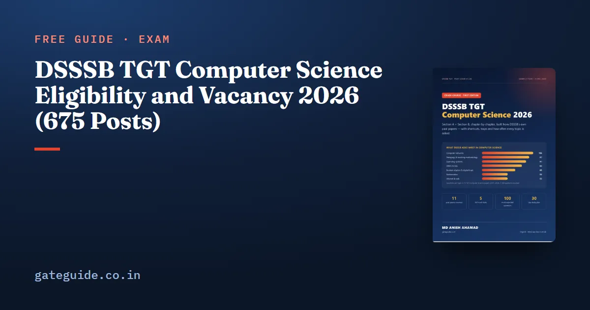

DSSSB TGT Computer Science Eligibility and Vacancy 2026 (675 Posts)

DSSSB TGT Computer Science 2026 has 675 vacancies under Post Code 41/26, and its eligibility is friendlier than most teaching posts: no B.Ed. and no CTET are required. This guide sets out the vacancies by category, the four qualifications that make you eligible, the age limit with relaxations, the pay and the fee, all from Advertisement 03/2026.
In this guide
Key takeaways
- Post Code 41/26: TGT Computer Science, Directorate of Education, Group B, Advertisement 03/2026 dated 29 May 2026.
- 675 tentative vacancies: UR 416, OBC 0, SC 104, ST 39, EWS 116 (including 22 PwBD).
- Qualification: BCA, or B.Sc with Computer Science in all years, or BE/B.Tech CS/IT, or any graduation plus DOEACC A level.
- No B.Ed. or CTET is needed for this post.
- Age up to 30 on 15 July 2026, with category relaxations; Pay Level 7 (₹44,900–1,42,400).
The words you will meet
- Crucial date — the date on which age and qualification are checked: 15 July 2026 for this advertisement.
- OBC (Delhi) — only OBC candidates on the Delhi list get OBC benefits; OBC candidates from outside Delhi are treated as UR.
- PwBD — persons with benchmark disabilities; their posts are counted inside the category totals.
Vacancies by category
| UR | OBC | SC | ST | EWS | Total | PwBD (included) |
|---|---|---|---|---|---|---|
| 416 | 0 | 104 | 39 | 116 | 675 | 22 |
Remember: the numbers are "tentative" in the advertisement. A corrigendum can change them; none for 41/26 was listed when checked on 11 October 2026.
Who is eligible: the four routes
| Route | Qualification |
|---|---|
| 1 | Bachelor's degree in Computer Application (BCA) from a recognised university |
| 2 | Graduation in Computer Science, with Computer Science studied as a main subject in all years |
| 3 | BE / B.Tech in Computer Science or Information Technology |
| 4 | Graduation in any subject plus the DOEACC 'A' level course |
Trap: route 2 needs Computer Science in all years of the degree. A B.Sc where computer science was only one optional year does not fit route 2 — check route 4 instead.
Age limit and relaxation
The upper age limit is 30 years on 15 July 2026. Relaxations under the advertisement:
| Category | Relaxation |
|---|---|
| SC / ST | 5 years |
| OBC (Delhi) | 3 years |
| PwBD | 10 years |
| PwBD + SC/ST | 15 years |
| PwBD + OBC | 13 years |
| Government servants | up to 5 years |
| Ex-servicemen | military service + 3 years (maximum 55) |
Pay and fee
- Pay: Pay Level 7, ₹44,900 – 1,42,400, Group B, non-gazetted, plus allowances as per rules.
- Fee: ₹100, paid only through SBI e-pay; women, SC, ST, PwBD and ex-servicemen are exempt. The fee is not refundable.
The application window (16 June to 15 July 2026) has closed. If you applied, the next step is the exam: our exam date guide has the shifts, and the exam pattern guide explains the qualifying marks.
What the vacancy number means for you
675 posts is large for a single subject. In 2025 the same department's TGT CS post (56/24) had 55 vacancies. More posts usually mean a lower merit cut-off than in small recruitments, which makes a well-prepared Section B score even more valuable. Start with the syllabus guide and the topics that past papers ask most.
Documents to keep ready
Selection does not end with the written exam. If you qualify, DSSSB will ask for document verification, and the eligibility rules above are checked against your papers. Keep these ready now so a deadline never surprises you:
- Degree certificate and mark sheets of every year (for route 2, the mark sheets show Computer Science in all years).
- DOEACC A level certificate, if you are eligible through route 4.
- Category certificate in the format DSSSB asks for, and for OBC, proof that you are on the Delhi list.
- PwBD certificate, if applicable.
- Date of birth proof and a valid photo identity card.
Trap: a qualification completed after the crucial date (15 July 2026) does not count, even if the result came out before the exam. Eligibility is fixed on the crucial date.
How to check your own eligibility in two minutes
Start with your degree certificate, not with the advertisement. Ask three questions in order. First, is your degree a BCA, or a BE or B.Tech in Computer Science or Information Technology? If yes, you meet the qualification through route 1 or route 3, and the subject of individual years does not matter. Second, if your degree is a B.Sc or another graduation, was Computer Science a main subject in every year? If the mark sheets of all three years show it, route 2 applies. Third, if neither fits, do you hold the DOEACC 'A' level certificate along with any graduation? That is route 4.
Then check the date. Both the qualification and the age are judged on the crucial date, 15 July 2026. A result declared after that date does not count, even if you passed the examination earlier. For age, count your years on 15 July 2026 and add the relaxation for your category. A candidate born on or after 16 July 1996 is within 30 years on that date without any relaxation.
Common doubts
Many candidates ask whether an MCA without a computer-related bachelor's degree is enough. The advertisement lists bachelor-level routes and the DOEACC route; it does not list MCA as a separate route, so check carefully whether your bachelor's degree fits one of the four, and read the advertisement's own wording if in doubt. Another common doubt is about the OBC category. Because the post has no OBC vacancies and only OBC (Delhi) candidates get OBC benefits, an OBC candidate from another state competes as unreserved. That does not stop anyone from applying; it changes only the category in which merit is compared.
Once eligibility is settled, the useful work is preparation. The exam window is close, and every week now is worth more than a week in the summer was.
Where to read the official text
The full advertisement, including every post code, the reservation notes and the age rules, is linked from the DSSSB vacancies page. Read the pages for Post Code 41/26 yourself once; it takes ten minutes and removes every doubt.
Quick revision
- Post Code 41/26, 675 vacancies: UR 416, SC 104, ST 39, EWS 116, OBC 0.
- BCA / B.Sc CS (all years) / BE-B.Tech CS-IT / graduation + DOEACC A level.
- No B.Ed. or CTET required.
- Age 30 on 15 July 2026; SC/ST +5, OBC +3, PwBD +10.
- Pay Level 7, fee ₹100 (women and reserved groups exempt).
Frequently asked questions
How many vacancies are there for DSSSB TGT Computer Science 2026?
Advertisement 03/2026 lists 675 tentative vacancies for Post Code 41/26, TGT Computer Science in the Directorate of Education - 416 UR, 104 SC, 39 ST, 116 EWS and none for OBC. The 675 include 22 posts for persons with benchmark disabilities. Vacancies can change by corrigendum, so check the DSSSB website.
Is B.Ed. required for DSSSB TGT Computer Science?
No. For Post Code 41/26 the advertisement lists no B.Ed. and no CTET. The essential qualification is a BCA, a graduation with Computer Science in all years, a BE or B.Tech in Computer Science or IT, or any graduation plus the DOEACC A level course. Other TGT posts in the same advertisement do need B.Ed. or CTET.
What is the age limit for DSSSB TGT Computer Science?
The upper age limit is 30 years, counted on the crucial date of 15 July 2026. Relaxation is 5 years for SC and ST, 3 years for OBC, 10 years for PwBD, with longer combined relaxations for PwBD candidates who are also SC, ST or OBC, and rules for government servants and ex-servicemen.
What is the salary of a DSSSB TGT Computer Science teacher?
The post is in Pay Level 7, with a pay scale of 44,900 to 1,42,400 rupees, Group B, non-gazetted. Allowances are added on top as per Delhi government rules, so the in-hand amount is higher than the basic pay at the start of the scale.
Sources
Dates, vacancies and the syllabus are set by DSSSB and can change. Always confirm at dsssb.delhi.gov.in. GATE Guide is not affiliated with DSSSB.